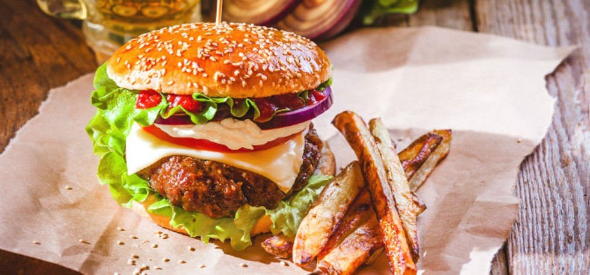

Fat Loss And Cheat Meals: Stop Cheating Too Much Too Early
Cheat meals taste just as good as they sound when you have been religiously abiding to a dieting routine. They prevent catabolism, and boost the metabolism. But what happens when a fat dude with an eating disorder starts cheating in the very first week of his diet? Well, he becomes fatter and his ‘dieting plans’ remain plans. The effects of cheating are not only physical but also very much mental. You really don’t want to mess up your progress. Keep these in mind next time you sneak in a cheat meal.
First things first, cheat meals aren’t meant for everyone. If you are between 20-35% body fat, don’t know what inside of the gym looks like and are working towards fat loss for the time in your life, it’s definitely not for you. Well at least not for a good 90 days from the start of your program. The more body fat you have, the more are the chances that the glycogen will be stored as fat. Look, cheating on meals is like giving in to your addiction and if your obesity is food-induced, chances are you will never stop at one meal. There are always more chances of derailing from the diet by a cheat meal than there are of going back to the diet. Think logically: you love the progress more or the mental and physical backlash you will face after stuffing your face in a cheat meal? If your body fat is critical, stop pleasing yourself with cheat meals.
In most cases eating a cheat meal kicks off hours of binge eating. Here is where re-feeding comes into play. Re-feeding is nothing but having a meal that’s rich in carbohydrates but only the ‘good ones’ with a sole purpose of replenishing glycogen stores. While the macro nutrient source of a ‘cheat meal’ can be any, re-feed meals are strictly good carbohydrates and fruits based. So next time, instead for hitting a fast food joint, hit a place where you get good fish/chicken and rice. Learn to harness the power of good food and you will never want a cheat meal again.
f must cheat, cheat wisely. Plan your cheat meal either as a pre-workout meal or a post workout meal. Eating it before will ensure optimum glycogen stores leading to a power-packed workout, while eating it after will help aid muscle recovery and lesser glycogen will be stored as fat. Don’t go overboard though. Remember, you can’t outdo a bad diet. By taxing workouts here is mean are HIIT sessions or leg or back days.